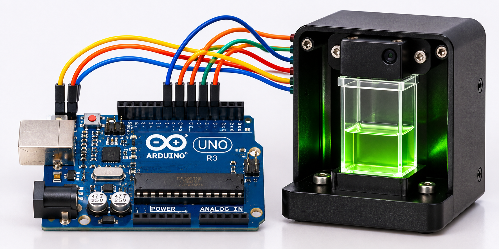

Biomedical Engineering Research Project
Optical intelligence.
Glucose insights.
An optical sensing and machine-learning research platform for glucose concentration estimation using six visible-wavelength channels, Arduino-based data acquisition and intelligent prediction.
Explore the Project →
Explore the Research
Inside the research platform
01. Project Overview
Motivation, objectives and methodology.
02. System Architecture
System components and processing workflow.
03. Optical Sensing
Six-wavelength optical sensing methodology.
04. Machine Learning Results
Random Forest performance and explainability.
05. Interactive Prototype
Simulated optical measurements and prediction.